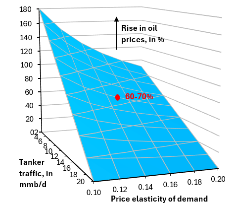

His post included a three-dimensional surface plot, illustrating the effects of demand price elasticity and tanker traffic through the Strait of Hormuz.

Although the three-dimensional aspects of this particular chart can be perceived well enough in a static 2D rendering, in general we advocate for dynamic camera perspectives for 3D charts, in order to ensure that the audience can fully perceive the content from all three dimensions. Such dynamism brings an eye-catching aesthetic that functions hand-in-glove with the conveyance of the additional information it delivers.
This illustrates very specifically and practically the abstract notion that until one perceives a thing from multiple angles, one has not fully perceived it.